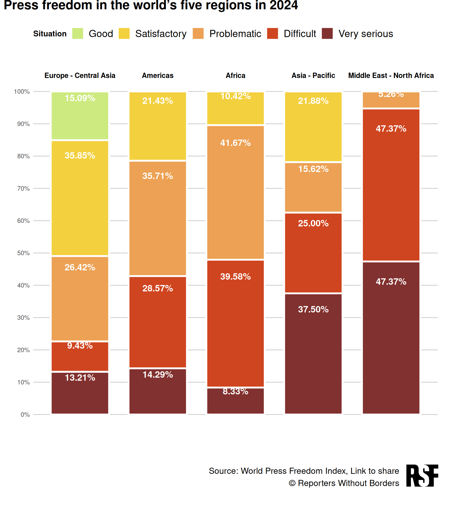

Introduction: Journalism under political pressure
Press freedom around the world is being threatened by the very people who should be its guarantors – political authorities. Reporters without Borders (RSF) conducts a global ranking of press freedom in each country every year, by analyzing several socioeconomic and political indicators.
According to the RSF, the purpose of the World Press Freedom Index is to compare the level of freedom enjoyed by journalists and media in 180 countries and territories. But what do they define as press freedom to conduct this analysis?
It is “the ability of journalists as individuals and collectives to select, produce, and disseminate news in the public interest independent of political, economic, legal, and social interference and in the absence of threats to their physical and mental safety.” In the following stacked column chart, we observe the press freedom index around the world in 2024.
![Original chart. Source: [RSF] (https://rsf.org/es/clasificaci%C3%B3n-mundial-de-la-libertad-de-prensa-2024-el-periodismo-bajo-las-presiones-pol%C3%ADticas)](originalplot.jpeg)
As we can see, for scores lower than 40, press freedom is considered a very serious situation; between 40 and 55, difficult; between 56 and 70, problematic; between 70 and 85, satisfactory; and from 85 to 100, good.
In the plot, the countries are divided into five zones: Europe - Central Asia, Americas, Africa, Asia - Pacific and Middle East - North Africa. These columns are filled with the percentages of countries in each zone within each situation category. Every category would go with different colors (from very serious situation in dark read to good situation in bright green). For this graph, only 2024 data is needed.
The Maghreb and Middle East region registers the most serious situation in the World Press Freedom Index 2024, followed by the Asia-Pacific region, where journalism suffocates under the weight of authoritarian regimes. In Africa, although less than 10% of the region is in a “very serious” situation, almost half of the countries are in a “difficult” situation.
Replica
First, in order to create our graph, we load the libraries we are going to use throughout this workshop:
And then, we load our data, downloaded from the RSF website:
pressfreedom <- read_excel("pressfreedom24.xlsx")
head(pressfreedom)# A tibble: 6 × 7
Source.Name `Year (N)` ISO `Rank N` `Score N` EN_country Zone
<chr> <dbl> <chr> <dbl> <dbl> <chr> <chr>
1 2024.csv 2024 NOR 1 91.9 Norway Europe …
2 2024.csv 2024 DNK 2 89.6 Denmark Europe …
3 2024.csv 2024 SWE 3 88.3 Sweden Europe …
4 2024.csv 2024 NLD 4 87.7 Netherlands Europe …
5 2024.csv 2024 FIN 5 86.6 Finland Europe …
6 2024.csv 2024 EST 6 86.4 Estonia Europe …And we format it by assigning the labels we see in the original RSF graph:
press_freedom_df <- data.frame(pressfreedom)
press_freedom_df <- press_freedom_df |>
mutate(Situation = case_when(
Score.N < 40 ~ "Very serious",
Score.N >= 40 & Score.N < 55 ~ "Difficult",
Score.N >= 55 & Score.N < 70 ~ "Problematic",
Score.N >= 70 & Score.N < 85 ~ "Satisfactory",
Score.N >= 85 ~ "Good"
))
# Calculate the percentage of countries in each situation category by zone
percentage_data <- press_freedom_df |>
group_by(Zone, Situation) |>
summarise(count = n()) |>
ungroup() |>
group_by(Zone) |>
mutate(percentage = count / sum(count) * 100) |>
ungroup()
zone_order <- c("Europe - Central Asia", "Americas", "Africa", "Asia - Pacific", "Middle East - North Africa")
percentage_data$Zone <- factor(percentage_data$Zone, levels = zone_order)
situation_order <- c("Good", "Satisfactory", "Problematic","Difficult","Very serious")
percentage_data$Situation <- factor(percentage_data$Situation, levels = situation_order)Now that our data is organized, we proceed to create the plot:
# Load the logo image
logo <- image_read("RSFlogo.png")
# Create the stacked column chart
replicaplot <- ggplot(percentage_data, aes(x = Zone, y = percentage, fill = Situation)) +
geom_bar(stat = "identity", color = "white", size = 1.2, width = 0.75) + # Thicker borders, reduced width
geom_text(aes(label = sprintf("%.2f%%", percentage)),
position = position_stack(vjust = 0.87),
color = "white", size= 4.5, fontface = "bold") + # Bold values inside columns
# Add labels on top of the columns
geom_text(data = percentage_data |> group_by(Zone) |> summarise(y = 105),
aes(x = Zone, y = y, label = Zone),
inherit.aes = FALSE, hjust = 0.5, size = 3.5, fontface = "bold") +
scale_y_continuous(breaks = seq(0, 100, 10), limits = c(0, 110),
labels = scales::percent_format(scale = 1, suffix = "%")) +
scale_fill_manual(values = c("Very serious" = "#81312F",
"Difficult" = "#CF4520",
"Problematic" = "#ECA154",
"Satisfactory" = "#F3D03E",
"Good" = "#CDEA80")) +
guides(fill = guide_legend(override.aes = list(shape = 15, size = 6, stroke = 0), # Smaller squares (size = 4)
keywidth = 1, keyheight = 0.8,
title.position = "left",
label.theme = element_text(size = 14))) +
labs(title = "Press freedom in the world’s five regions in 2024",
x = "",
y = "",
fill = "Situation") +
theme_minimal() +
theme(
plot.title = element_text(face = "bold", size = 18, margin = margin(b = 10)), # Bold title, closer
plot.title.margin = margin(b = 20),
plot.title.position = "plot", # Title aligns with plot area
axis.text.x = element_blank(), # Remove x-axis labels (zones at bottom)
axis.ticks.x = element_blank(),
axis.title.y = element_text(size = 12),
panel.grid.major.x = element_blank(), # Grid only between axis
panel.grid.minor = element_blank(),
panel.grid.major.y = element_line(color = "gray80", size = 0.5), # Keep y-grid within axis
legend.position = "top", # Move legend to the top
legend.justification = "left", # Align legend to the left
legend.box.margin = margin(0, 0, -10, 0), # Remove extra margins in legend
legend.title = element_text(face = "bold"),
legend.margin = margin(t = 10),
plot.margin = margin(30, 10, 10, 10) # Adjust margins to bring elements closer
) +
# Add the secondary legend
annotation_custom(
grob = textGrob(
label = "Source: World Press Freedom Index, Link to share\n© Reporters Without Borders",
x = 0.85, y = -0.1, hjust = 1, vjust = 1,
gp = gpar(fontface = "italic", fontsize = 10)
)
)
secondary_legend <- ggdraw() +
# Draw the text
draw_text(
text = "Source: World Press Freedom Index, Link to share\n© Reporters Without Borders",
x = 0.87, # Move the text slightly to the left
y = 0.5, # Center vertically
hjust = 1, # Align text to the right
size = 12
) +
# Draw the logo next to the text
draw_image(
logo,
x = 0.67, # Align logo just to the right of the text
y = 0.27, # Align with the text
width = 0.5,
height = 0.5
)
# Combine using cowplot's `plot_grid`
final_plot <- plot_grid(
replicaplot +
theme(plot.margin = margin(0, 30, 0, 5)),
secondary_legend,
ncol = 1,
rel_heights = c(0.87, 0.13) # Adjust heights of the main plot and footer
)
final_plot
Now we can clearly see the press freedom situation in each continent for the year 2024. In the RSF’s website, we can see a dropdown menu to select the year, but when clicking on it we can only see 2023 and 2024, when the study by RSF includes data from the year 2002 onwards.
This is due to a change in the methodology of the study; the database is not consistent for every year, so they only showcase this graph for the latest years, in which they use the new one.
Nevertheless, given that the data actually exists and that I find it really interesting to compare a bigger timeframe, I chose to gather more data. And now it’s time for the improvement part!
Improvement
The original graph works completely fine and does its job at showing the different levels of press freedom in 2024. But the RSF study contains so much more information that could be displayed with just a little bit more interactivity that it is worth generating other graphs.
The press freedom data from 2002 to 2013 is not complete and hardly any information can be drawn from these files, so we are going to work with data from 2013 onwards, which still gathers some significant insights.
The dataset consists of press freedom indexes from 2013 to 2024. For each year, we have the name of the countries, the zone where they are and their rank and score.
In order to produce the improvement, we read all the mentioned data:
pressfreedomall <- read_excel("pressfreedom.xlsx")
pressfreedomall <- as.data.frame(pressfreedomall)
head(pressfreedomall) Source.Name Year ISO Rank Score EN_country Zone
1 2013.csv 2013 FIN 1 93.62 Finland Europe - Central Asia
2 2013.csv 2013 NLD 2 93.52 Netherlands Europe - Central Asia
3 2013.csv 2013 NOR 3 93.48 Norway Europe - Central Asia
4 2013.csv 2013 LUX 4 93.32 Luxembourg Europe - Central Asia
5 2013.csv 2013 AND 5 93.18 Andorra Europe - Central Asia
6 2013.csv 2013 DNK 6 92.92 Denmark Europe - Central Asia
Situation
1 Good situation
2 Good situation
3 Good situation
4 Good situation
5 Good situation
6 Good situationAs we stated previously, the methodology was different for these years, so we have to structure the data. We compute the percentage data for all years, like we did for the 2024 chart:
pressfreedomall2 <- pressfreedomall |>
mutate(Situation = case_when(
Score < 40 ~ "Very serious",
Score >= 40 & Score < 55 ~ "Difficult",
Score >= 55 & Score < 70 ~ "Problematic",
Score >= 70 & Score < 85 ~ "Satisfactory",
Score >= 85 ~ "Good"
))
# Calculate the percentage of countries in each situation category by zone
percentage_data_all <- pressfreedomall2 |>
group_by(Year, Zone, Situation) |>
summarise(count = n(), .groups = "drop") |>
group_by(Year, Zone) |>
mutate(percentage = count / sum(count) * 100) |>
ungroup()
zone_order <- c("Europe - Central Asia", "Americas", "Africa", "Asia - Pacific", "Middle East - North Africa")
percentage_data_all$Zone <- factor(percentage_data_all$Zone, levels = zone_order)
situation_order <- c("Good", "Satisfactory", "Problematic","Difficult","Very serious")
percentage_data_all$Situation <- factor(percentage_data_all$Situation, levels = situation_order)Now, we create a stacked area chart for all the timespan in the study, with the option to choose which specific area we want to analyse over the years.
This type of chart works for those interested in evaluating not a year in particular but the change in slopes across the years of the study. Here, we can better observe the trends and the up and downs of the different categories, something that cannot be seen with just the original graph.
fill_colors <- c(
"Very serious" = "#81312F",
"Difficult" = "#CF4520",
"Problematic" = "#ECA154",
"Satisfactory" = "#F3D03E",
"Good" = "#CDEA80"
)
# Get unique zones, situations, and years
zones <- levels(percentage_data_all$Zone)
situations <- levels(percentage_data_all$Situation)
years <- sort(unique(percentage_data_all$Year))
# Build traces for each situation per zone
traces <- list()
for (z in zones) {
df_zone <- filter(percentage_data_all, Zone == z)
for (sit in situations) {
df_sit <- filter(df_zone, Situation == sit)
traces[[length(traces) + 1]] <- list(
x = df_sit$Year,
y = df_sit$percentage,
stackgroup = "one",
type = "scatter",
mode = "none",
fillcolor = fill_colors[sit],
name = sit,
visible = ifelse(z == zones[1], TRUE, FALSE) # only first zone visible initially
)
}
}
# Create dropdown button
buttons <- lapply(seq_along(zones), function(i) {
visible_vec <- rep(FALSE, length(traces))
start_idx <- (i - 1) * length(situations) + 1
end_idx <- start_idx + length(situations) - 1
visible_vec[start_idx:end_idx] <- TRUE
list(
method = "update",
args = list(list(visible = visible_vec),
list(title = paste("Region:", zones[i]))),
label = zones[i]
)
})
p <- plot_ly()
for (trace in traces) {
p <- add_trace(p,
x = trace$x, y = trace$y,
type = trace$type,
mode = trace$mode,
stackgroup = trace$stackgroup,
fillcolor = trace$fillcolor,
name = trace$name,
visible = trace$visible)
}
p <- layout(
p,
title = paste("Region:", zones[1]),
yaxis = list(title = "Percentage of Countries", range = c(0, 100), ticksuffix = "%"),
xaxis = list(title = "Year", tickvals = years),
updatemenus = list(
list(
y = 1.1,
buttons = buttons,
direction = "down",
showactive = TRUE
)
),
legend = list(orientation = "h", y = -0.2)
)
pAnother visualization option is to create an animated bar chart, in which by clicking the play button at the bottom right part of the graph, we can travel across the years and see how the bars move as the press freedom situation changes.
By doing this -having added the rest of the years of the study into the dataset- we are allowing users to select the year they are interested in and not only the last two.
# Prepare traces for each zone and situation with animation frames by Year
traces <- list()
for (z in zones) {
df_zone <- filter(percentage_data_all, Zone == z)
# We add one trace per situation, but animation frames will be years
for (sit in situations) {
df_sit <- filter(df_zone, Situation == sit)
traces[[length(traces) + 1]] <- list(
x = df_sit$Situation,
y = df_sit$percentage,
color = fill_colors[sit],
type = "bar",
name = sit,
frame = df_sit$Year,
visible = z == zones[1] # initially show only first zone
)
}
}
# build the plot using plot_ly and filter by zone with buttons
# frames for each year and filter by zone using buttons
fig <- plot_ly()
for (z in zones) {
df_zone <- filter(percentage_data_all, Zone == z)
for (sit in situations) {
df_sit <- filter(df_zone, Situation == sit)
fig <- add_trace(
fig,
data = df_sit,
x = ~Situation,
y = ~percentage,
type = "bar",
name = sit,
frame = ~Year,
marker = list(color = fill_colors[sit]),
visible = z == zones[1]
)
}
}
# Build buttons to toggle zone visibility
buttons <- lapply(seq_along(zones), function(i) {
visible_vec <- rep(FALSE, length(zones) * length(situations))
start <- (i - 1) * length(situations) + 1
end <- start + length(situations) - 1
visible_vec[start:end] <- TRUE
list(
method = "update",
args = list(list(visible = visible_vec), list(title = paste("Region:", zones[i]))),
label = zones[i]
)
})
fig <- fig %>%
layout(
barmode = "stack",
yaxis = list(range = c(0, 100), title = "Percentage of Countries", ticksuffix = "%"),
xaxis = list(title = "Situation"),
updatemenus = list(
list(
y = 1.15,
buttons = buttons,
direction = "down",
showactive = TRUE
)
),
title = paste("Region:", zones[1])
) %>%
animation_opts(frame = 1000, transition = 500, redraw = FALSE) %>%
animation_slider(currentvalue = list(prefix = "Year: ", font = list(size = 16))) %>%
animation_button(label = "▶ Play", x = 1.1, xanchor = "right", y = 0, yanchor = "bottom")
figAdditionally, we can put these two visualization options in a Shiny App with two tabs. At the left of the page, we have the option to choose the zone we want to look at.
library(shiny)
ui <- fluidPage(
titlePanel("Press Freedom: Bar vs. Stacked‐Area"),
sidebarLayout(
sidebarPanel(
selectInput(
"selected_zone",
"Choose a region (Zone):",
choices = zone_levels,
selected = zone_levels[1]
),
tags$p("Toggle between:"),
tags$ul(
tags$li(strong("Animated Bar:"), " vertical stacked bars (Situation on x, % on y), animated over years."),
tags$li(strong("Stacked Area:"), " vertical area plot (Year on x, % on y).")
),
width = 3
),
mainPanel(
tabsetPanel(
id = "which_plot",
tabPanel(
"Animated Bar",
br(),
plotlyOutput("animated_bar", height = "550px")
),
tabPanel(
"Stacked Area",
br(),
plotOutput("stacked_area", height = "550px")
)
),
width = 9
)
)
)
server <- function(input, output, session) {
filtered_bar_data <- reactive({
percentage_data_all %>%
filter(Zone == input$selected_zone) %>%
arrange(Year, Situation)
})
output$animated_bar <- renderPlotly({
df <- filtered_bar_data()
plot_ly(
df,
x = ~Situation,
y = ~percentage,
color = ~Situation,
colors = fill_colors,
type = "bar",
frame = ~Year,
hoverinfo = "text",
text = ~paste0(sprintf("%.1f", percentage), "%"),
textposition = "inside"
) %>%
layout(
barmode = "stack",
xaxis = list(title = "Situation", tickfont = list(size = 12)),
yaxis = list(
title = "Percentage of Countries",
range = c(0, 100),
ticksuffix = "%",
zeroline = TRUE
),
showlegend = FALSE,
title = paste0("Region: ", input$selected_zone)
) %>%
animation_opts(
frame = 1000,
transition = 500,
easing = "linear",
redraw = FALSE
) %>%
animation_slider(
currentvalue = list(
prefix = "Year: ",
font = list(color = "black", size = 16)
)
) %>%
animation_button(
label = "▶ Play\n",
x = 1.05,
xanchor = "right",
y = 0,
yanchor = "bottom"
)
})
filtered_area_data <- reactive({
percentage_data_all %>%
filter(Zone == input$selected_zone) %>%
arrange(Year, Situation)
})
output$stacked_area <- renderPlot({
df <- filtered_area_data()
ggplot(df, aes(x = Year, y = percentage, fill = Situation)) +
geom_area(color = "white", size = 0.3) +
scale_fill_manual(values = fill_colors) +
scale_x_continuous(breaks = year_values) +
scale_y_continuous(
labels = scales::percent_format(scale = 1, suffix = "%"),
limits = c(0, 100)
) +
labs(
title = paste0("Region: ", input$selected_zone),
x = "Year",
y = "Percentage of Countries",
fill = "Situation"
) +
theme_minimal(base_size = 14) +
theme(
plot.title = element_text(face = "bold", size = 20, hjust = 0.5),
axis.text.x = element_text(angle = 45, hjust = 1),
panel.grid.major.y = element_line(color = "gray80", size = 0.5),
panel.grid.minor = element_blank(),
legend.position = "bottom",
legend.title = element_text(face = "bold"),
axis.title.x = element_text(margin = margin(t = 10)),
axis.title.y = element_text(margin = margin(r = 10))
)
})
}
shinyApp(ui = ui, server = server)The insights we can get from all these graphs are worrying: governments are failing to guarantee an exemplary framework for the practice of journalism and the right of citizens to reliable, independent and pluralistic information.
Journalists are being threatened by both the wars they’re covering and the political actors playing in the background of these conflicts. Only time will tell how future elections around the globe are going to pressure them even more.